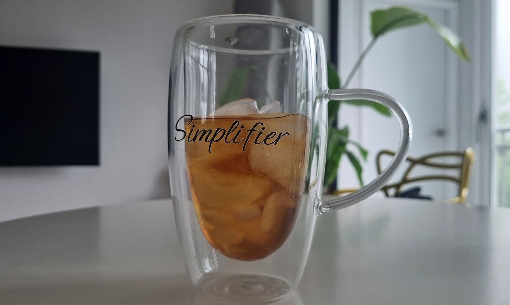
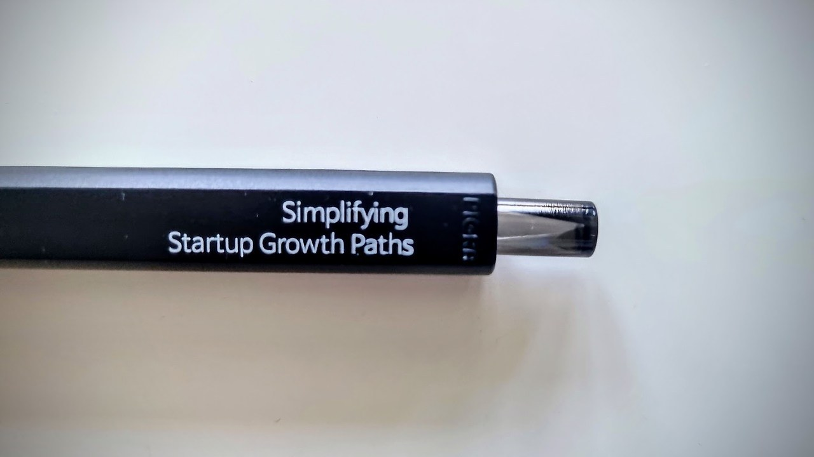
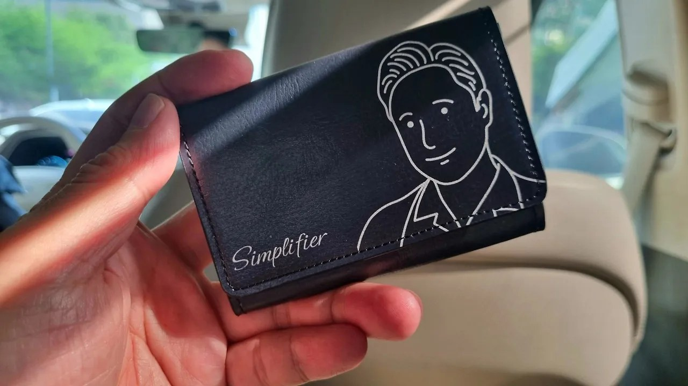
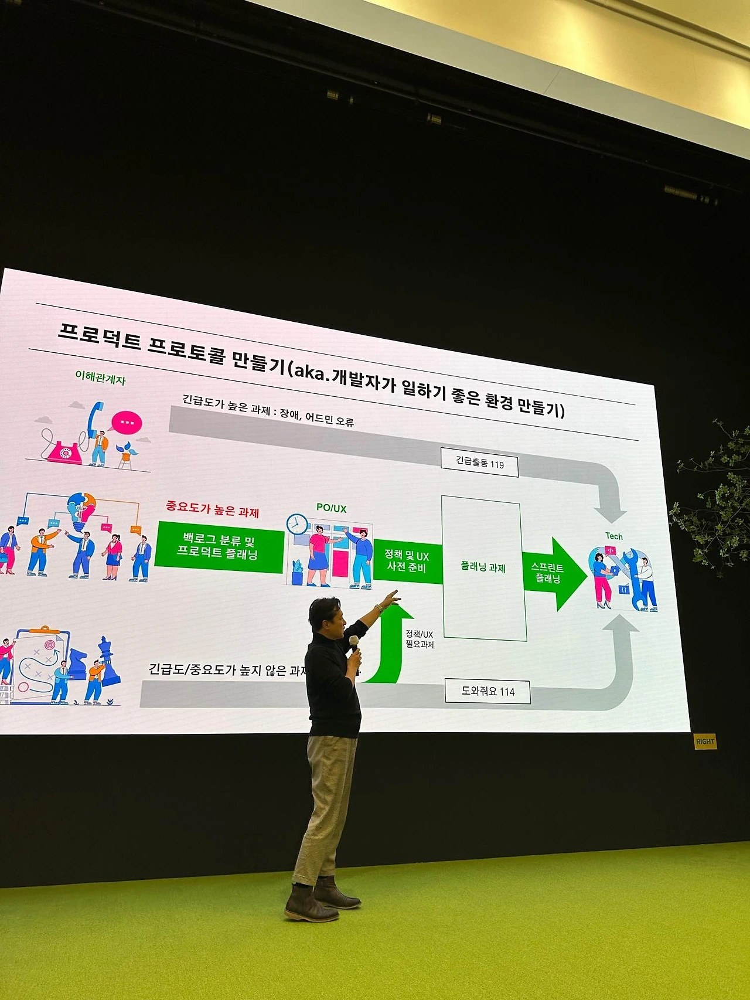
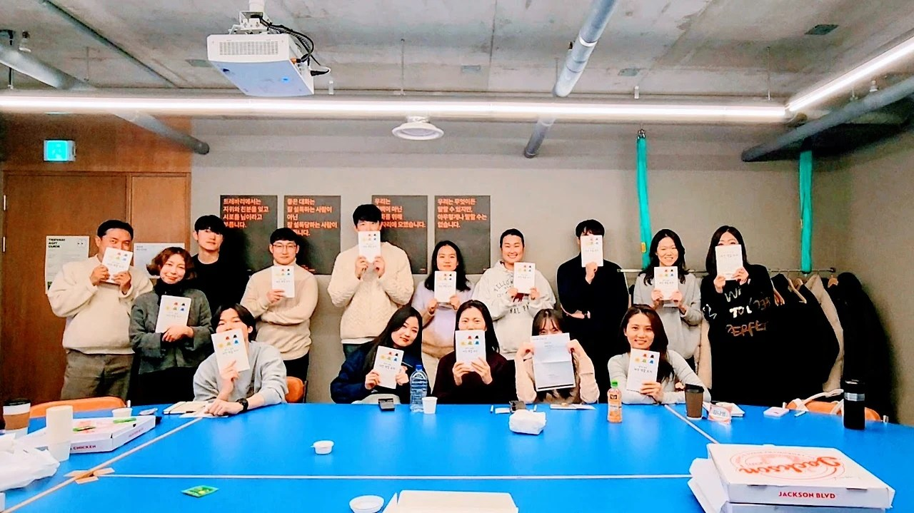
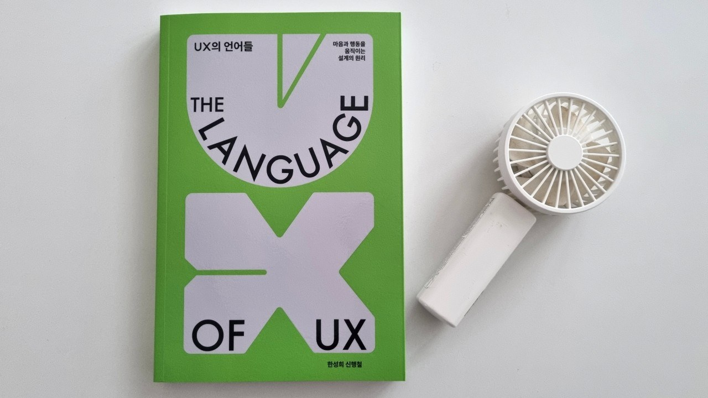
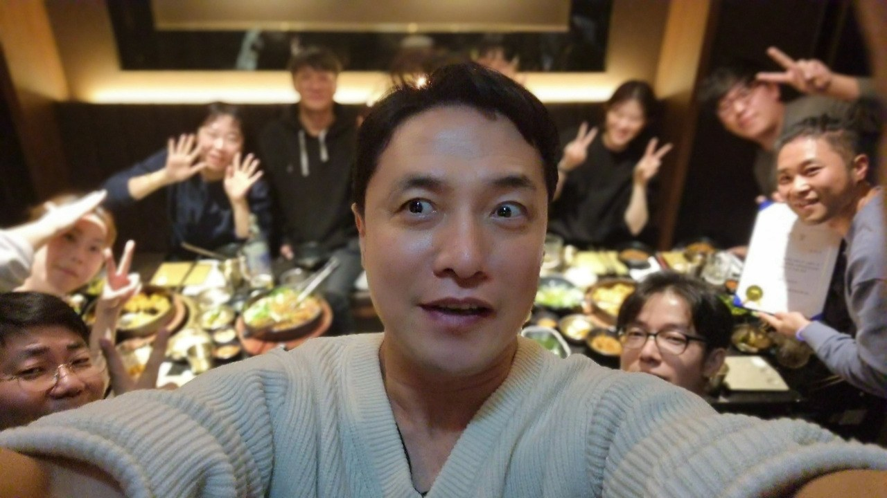
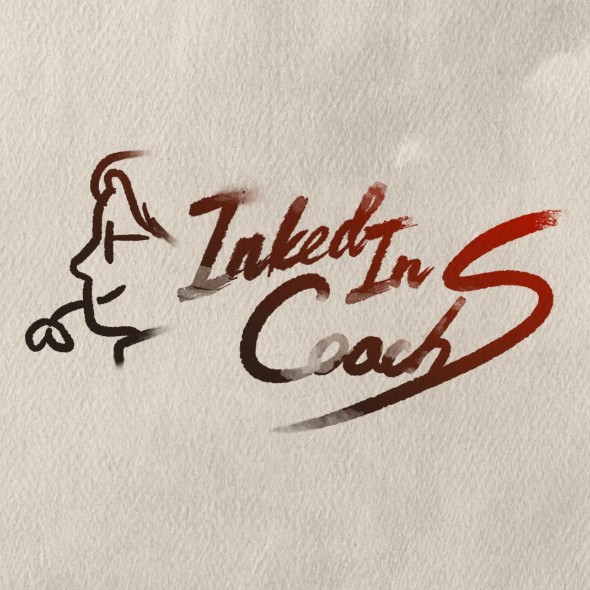
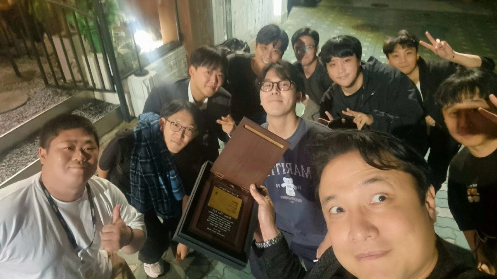

“본질이 선명해질 때, 성장은 가속됩니다.”

일반적인 컨설팅처럼 외부인이 훈수를 두는 형태가 아닌, 코치가 리더·PO/UX실무자와 함께 프로덕트를 만들며 문제를 풀어가는 플레잉코칭 모델을 지향합니다.

스타트업부터 메이저 기업까지, 성장 전략과 프로덕트·조직 경쟁력, AX 이슈까지 전략적으로 해결합니다. 탑티어급 PO/UX 역량과 실전 경험을 바탕으로 명확한 전략 구조로 바꿉니다.

컨셉적으로만 좋은 코칭이 아닌, 실제 상황에서 적용 가능하고 실제로 동작하는 성과를 만드는 것에 집중합니다. 매출 3배 성장, BEP 전환 등 실전 사례를 보유하고 있습니다.

복잡한 문제를 단순화하여 성장 구조로 바꾸는, 25년 경력의 스타트업 코칭 & 제품·조직 전략가
코칭 현장에서 마주한 문제들

스타트업 인사이트
검증된 강연 자격
스타트업 강의·멘토링
강연 진행 기관
최고 피드백 평점 (5.0 만점)

토크세션 · GS
토크세션 · 숙명여대
토크세션 · 트레바리
토크세션 · 아산나눔재단
토크세션 · 클래스유
그 외, 심플리파이어가 보는 것들





복잡한 상황에서 핵심 목표와 실행 가능한 성장 경로를 함께 찾아내는 것을 방법론으로 삼습니다. 외부 컨설턴트처럼 조언만 남기고 떠나는 것이 아니라, 실무자와 함께 실행하며 문제를 해결합니다.
스타트업 Playing Coach 트랙(주 1~5일 상주)과 기업 강연 트랙(1~3시간 강연+워크샵) 두 가지로 운영됩니다.
프로젝트 특성(기간, 상주여부, 강연 규모 등)에 맞춰 산정되며, 커피챗에서 대략적 견적을 안내드립니다.
무료 커피챗 → 사례 공유 → 합의 시 계약 순으로 진행됩니다.
정량 지표는 매주, 정성 지표는 정기 원온원으로 추적합니다. 매출 3배 성장, BEP 전환 등 실사례가 있습니다.